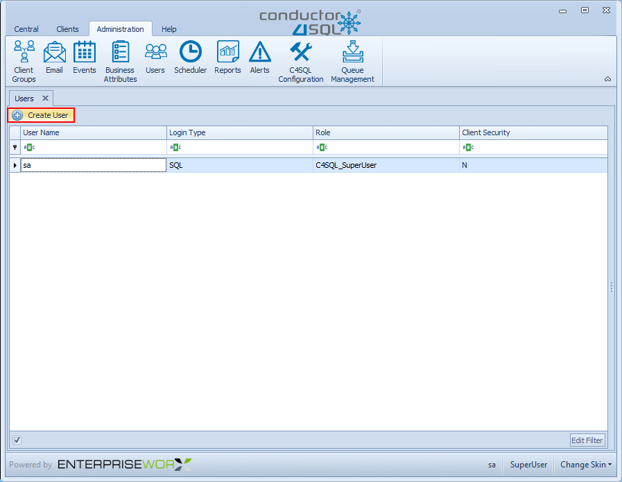
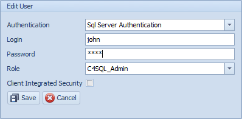
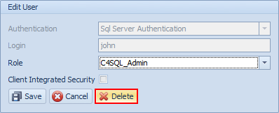

User Administration Overview
The Users Administration screen is used for configuring users, where you can add users and give them different roles within the Conductor4SQL application.
Adding a New User
To add a new users, you will first be presented with the screen below.

To add a new user click on the Create User button as highlighted above. Then the panel below will show on the right side of the screen:

-
Authentication - You will need to select and Authentication method, Windows Authentication or SQL Server Authentication
-
Login - Here you need to input a name that you will use to access the Conductor application.
-
Role - You need to select a role for the user according to how they need to access the system, the options are as follows: C4SQL Read Only, C4SQL Admin, C4SQL Data Sync Admin and C4SQL Super User
Note
- C4SQL Read Only - This user can view ALL screens but cannot interact with any of the screens
- C4SQL Admin - This user can do anything in conductor4SQL except for User Administration
- C4SQL Data Sync Admin - This user can only interact with the Data Sync Management Tab
- C4SQL Super User - This user can do anything he/she wishes in Conductor4SQL
-
Client Integrated Security - When running user commands or queries the queries will Run As this user.
-
Clicking on the Save button with add/save the newly created user to the system
Tip
You can also delete a user by selecting the user on the grid, and clicking on the delete button, see screen below.
